02. Logic gates and Boolean algebra
Every digital system on an aircraft, from a landing-gear-door warning to APU start control, is built from basic logic gates combined according to Boolean algebra rules. This module moves from single gates to real combinational circuits and the logic families used on aircraft.
CO/CLO: CO2, CO3Time (estimate): ≈ 8.8 lecture hours60 slidesQuestions: 112 (92 original)
Slide: Logic circuit pp.1-60 · Tooley Ch.5 (p.70-94) · Floyd Ch.3 (p.125-190), Ch.4 (p.191-260); bistable latches: Ch.7 · Book content map
Tooley: Ch.5 Logic circuits (p.70-94): gates, Boolean algebra, combinational logic, tri-state, monostable/bistable, logic families
Floyd: Ch.3 Logic Gates (p.125-190) + Ch.4 Boolean Algebra and Logic Simplification (p.191-260); the bistable part is cross-referenced with Ch.7 Latches, Flip-Flops, and Timers (p.387-448)
Tooley bundles gates + Boolean algebra + bistables into one chapter; Floyd splits this into three more detailed chapters.
- From basic gates to a real problem
- Boolean algebra
- Combinational logic circuits
- Tri-state logic, monostables & bistables
- Logic families
📷 The lecturer's original slides (click to enlarge)
60 slides
 logic·1
logic·1 logic·2
logic·2 logic·3
logic·3 logic·4
logic·4 logic·5
logic·5 logic·6
logic·6 logic·7
logic·7
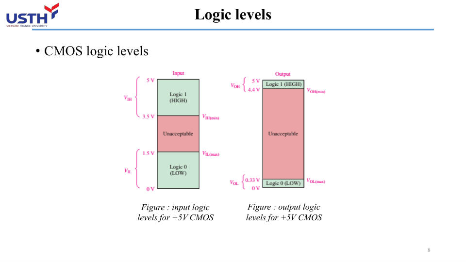
logic·8 logic·9
logic·9 logic·10
logic·10 logic·11
logic·11 logic·12
logic·12 logic·13
logic·13 logic·14
logic·14 logic·15
logic·15 logic·16
logic·16 logic·17
logic·17 logic·18
logic·18
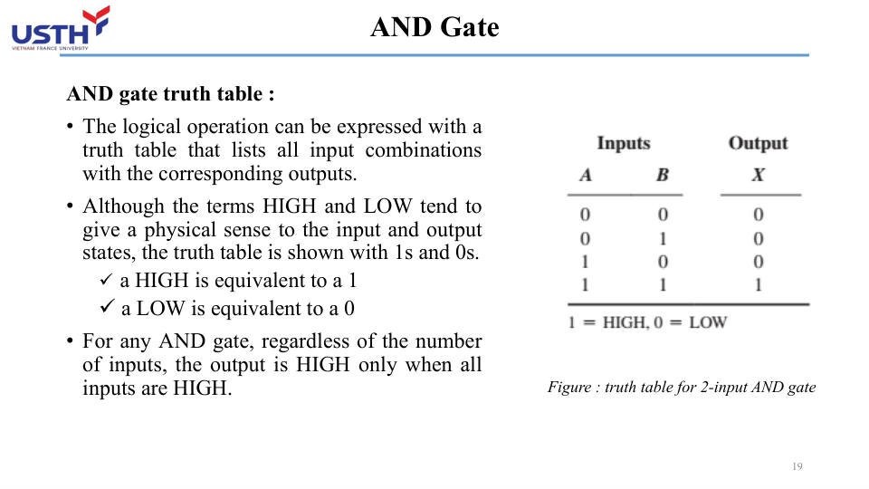
logic·19
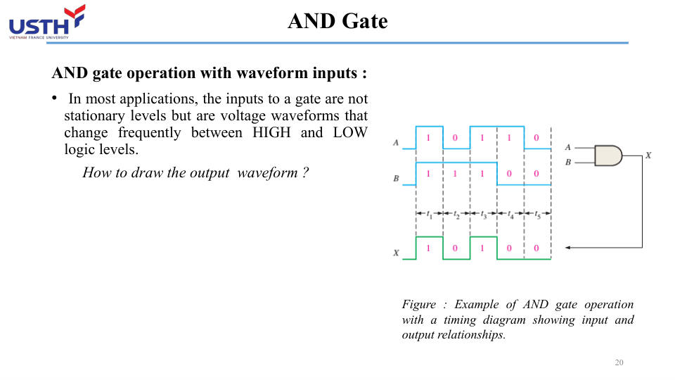
logic·20 logic·21
logic·21 logic·22
logic·22 logic·23
logic·23
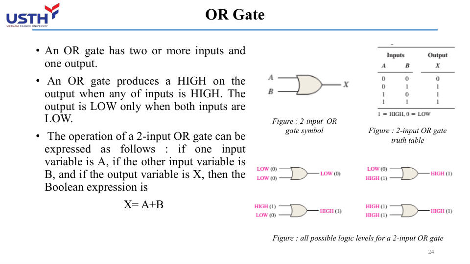
logic·24 logic·25
logic·25 logic·26
logic·26 logic·27
logic·27 logic·28
logic·28
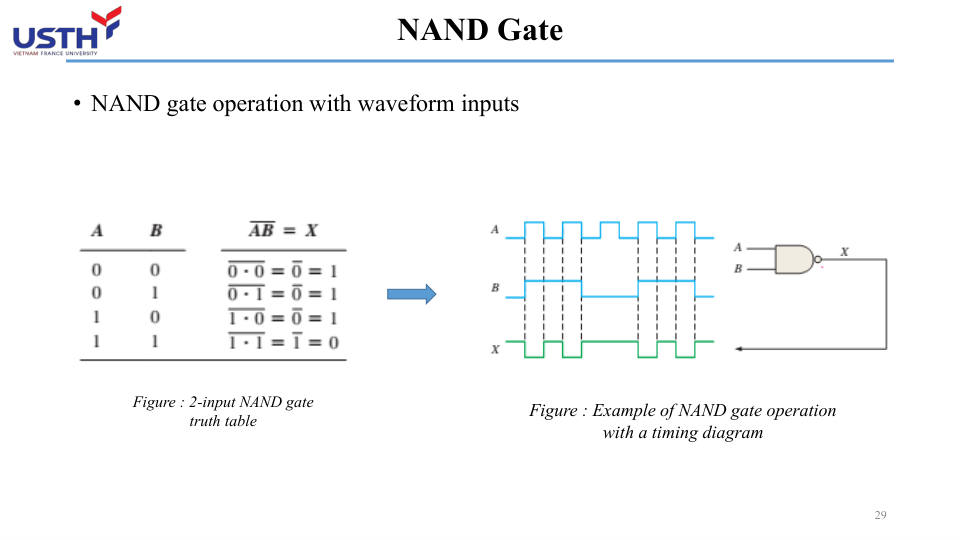
logic·29
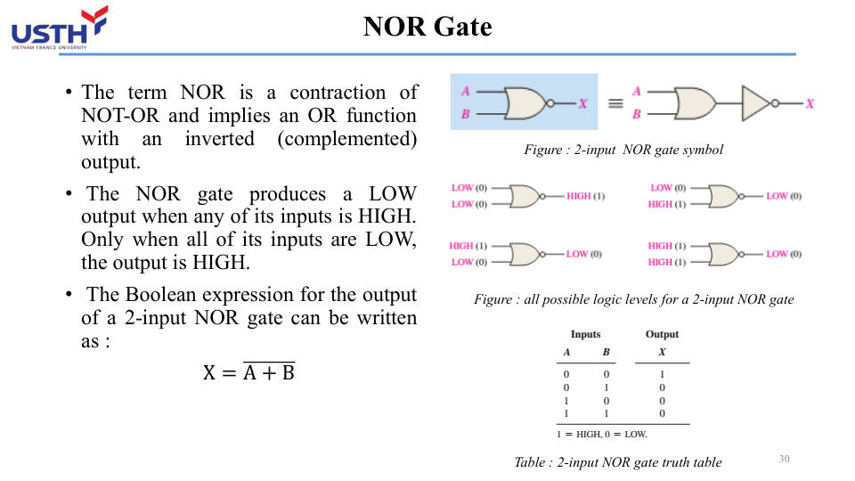
logic·30
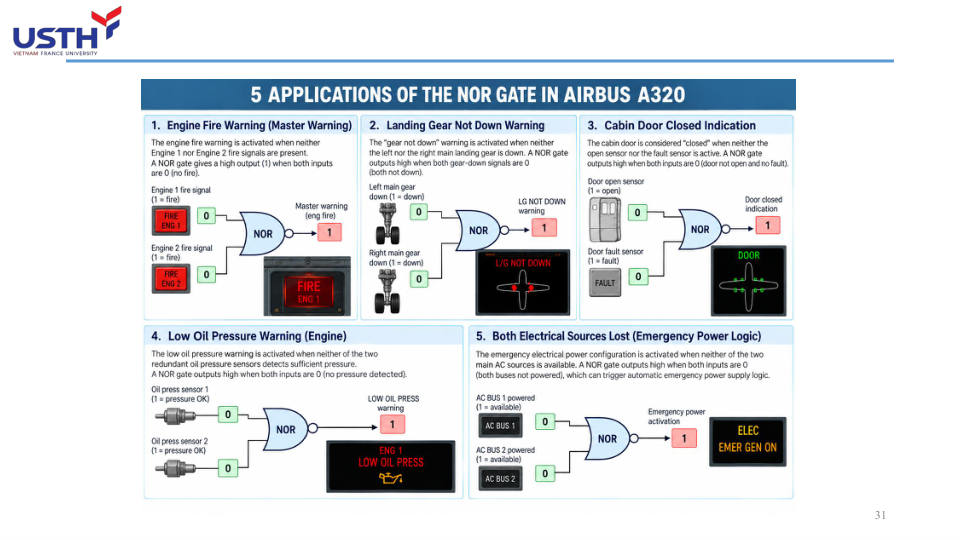
logic·31 logic·32
logic·32 logic·33
logic·33
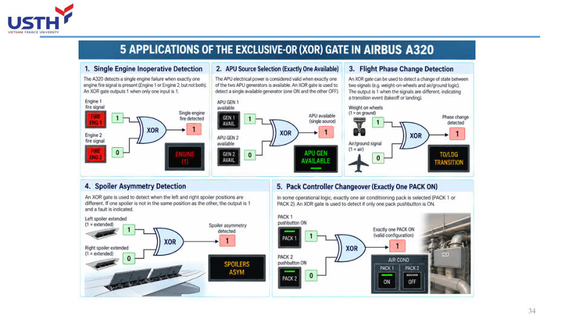
logic·34 logic·35
logic·35 logic·36
logic·36 logic·37
logic·37 logic·38
logic·38 logic·39
logic·39 logic·40
logic·40 logic·41
logic·41 logic·42
logic·42 logic·43
logic·43 logic·44
logic·44 logic·45
logic·45 logic·46
logic·46
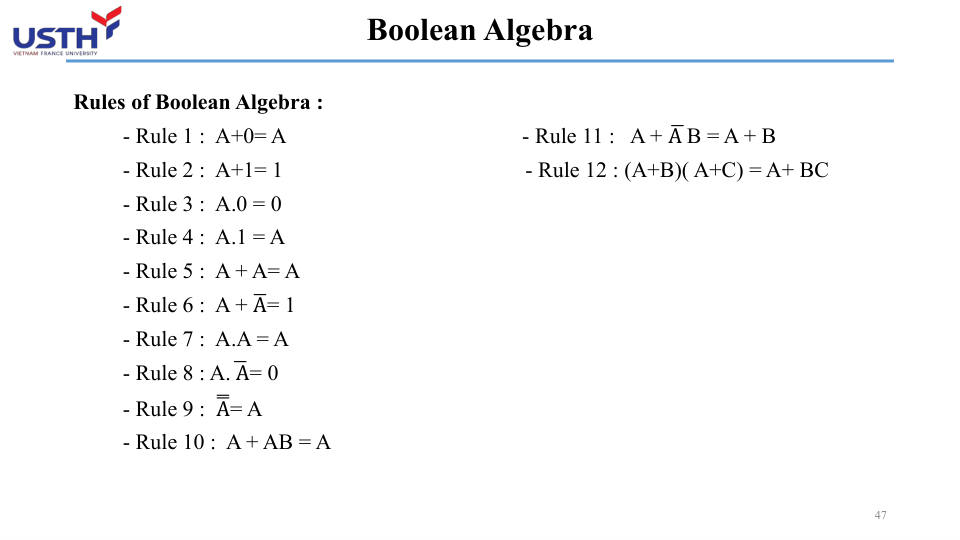
logic·47
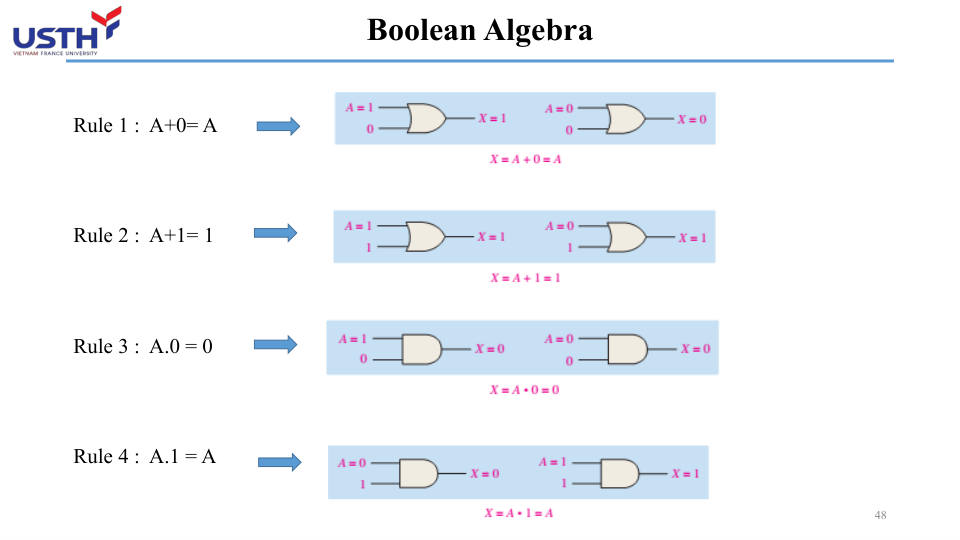
logic·48 logic·49
logic·49 logic·50
logic·50 logic·51
logic·51
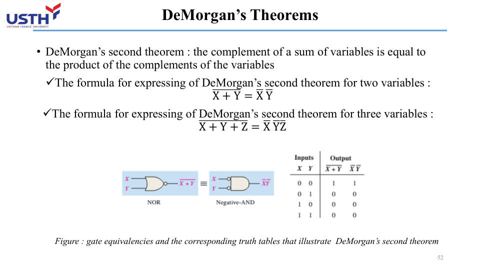
logic·52 logic·53
logic·53 logic·54
logic·54 logic·55
logic·55 logic·56
logic·56 logic·57
logic·57 logic·58
logic·58 logic·59logic·60
logic·59logic·60
Lecture
From basic gates to a real problem
- AND, OR, NOT, NAND, NOR, XOR: truth tables and symbols
- Opening example: landing gear door unlocked warning
What is a logic gate?
A logic gate is a circuit with one or more binary inputs (0 or 1) and ONE binary output, determined by a fixed Boolean function of its inputs. It is the smallest building block of every digital system.
📖 Explanation for beginners
Picture a logic gate as a smart switch: it looks at one or more 0/1 signals coming in, then, following a fixed rule wired into the circuit that never changes, produces exactly one 0 or 1 output.
Everything complex a computer does, from addition to comparison to deciding whether to light a warning on an aircraft, is built by wiring together very large numbers of these simple gates. Mastering the 6 basic gates in this module is a prerequisite before any more complex digital circuit makes sense.
AND and OR gates
| A | B | AND | OR |
|---|---|---|---|
| 0 | 0 | 0 | 0 |
| 0 | 1 | 0 | 1 |
| 1 | 0 | 0 | 1 |
| 1 | 1 | 1 | 1 |
AND outputs 1 only when ALL inputs are 1. OR outputs 1 when AT LEAST ONE input is 1.
📖 Explanation for beginners
AND and OR are the two most basic gates, and the ones most often confused. A reliable way to remember them: think of AND like a chain that needs every single link solid to hold weight, one weak link (a 0) and the whole chain fails (result 0). OR is the opposite, like a building with several exit doors: just one open door (a 1) lets people escape, not every door needs to be open.
Looking at the truth table: AND has exactly one row giving 1 (when both A and B are 1), while OR has three rows giving 1 (only one row gives 0, when both A and B are 0). This is the fastest way to tell the two apart from a truth table alone, without recalling the wording of the definition.
The NOT gate (inverter)
NOT has a single input and inverts it: a 0 input gives a 1 output, a 1 input gives a 0 output.
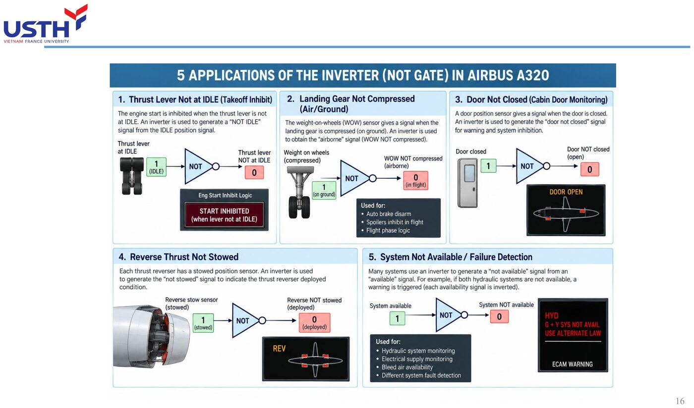
📖 Explanation for beginners
NOT is the simplest gate because it has only one input, so it needs just 2 rows instead of the 4-row truth table other 2-input gates require. The prime symbol (A′, read "A prime" or "not A") and the bar drawn over a letter both mean exactly the same thing: invert the value.
A visual way to remember it: NOT behaves like a mirror that reflects back the exact opposite of what it receives, with no further "thinking" involved, simply flipping 0 to 1 and 1 to 0.
NAND and NOR gates
| A | B | NAND | NOR |
|---|---|---|---|
| 0 | 0 | 1 | 1 |
| 0 | 1 | 1 | 0 |
| 1 | 0 | 1 | 0 |
| 1 | 1 | 0 | 0 |
NAND = NOT(AND), NOR = NOT(OR): each gate simply inverts the entire result column of its underlying AND/OR gate.

📖 Explanation for beginners
NAND and NOR are "derived" gates: take the exact result of AND or OR and invert the whole output column. The fastest way to remember them without building a new truth table from scratch: take the AND table you already know and flip every result (0 becomes 1, 1 becomes 0) to get the NAND table; do the same to OR to get NOR.
This is exactly what the names "NOT-AND" (shortened to NAND) and "NOT-OR" (shortened to NOR) already tell you: no need to memorise two separate new truth tables, just remember the rule "take AND/OR, then invert".
XOR and XNOR gates
| A | B | XOR | XNOR |
|---|---|---|---|
| 0 | 0 | 0 | 1 |
| 0 | 1 | 1 | 0 |
| 1 | 0 | 1 | 0 |
| 1 | 1 | 0 | 1 |
XOR outputs 1 when the two inputs DIFFER; XNOR (the inverse of XOR) outputs 1 when they are the SAME: often used to compare bits.

📖 Explanation for beginners
XOR (Exclusive-OR) is the gate most likely to cause confusion, since its name sounds close to OR but its meaning differs sharply. Ordinary OR accepts the case where BOTH inputs are 1, but XOR does not: XOR outputs 1 only when the two inputs are DIFFERENT (one is 0, the other is 1), and outputs 0 when they are the SAME (both 0 or both 1).
XOR's most important practical use is bit comparison: if you want to know whether two signals "agree" with each other, XOR immediately flags 1 whenever they disagree. XNOR is XOR's inverse, so its logic runs the other way: it outputs 1 when the two inputs match.
Worked example: A·B + C
Evaluate Y = A·B + C with A=1, B=0, C=1:
- Step 1: A·B = 1·0 = 0
- Step 2: Y = 0 + C = 0 + 1 = 1
Result: Y = 1. Always evaluate AND first (like multiplication), then OR (like addition): the same operator precedence as ordinary arithmetic.
📖 Explanation for beginners
This is the first exercise applying the rule for evaluating a Boolean expression with more than one operator: exactly as in ordinary arithmetic, AND (multiplication) is always computed BEFORE OR (addition) when there are no parentheses, the same "multiply first, add second" rule learned in primary school.
With A=1, B=0, C=1, you must compute A·B first (giving 0), then add C (0+1=1). Getting the order wrong (adding B+C before multiplying by A) gives a completely different answer. Always ask "which part has an AND" and compute that first whenever an expression mixes AND and OR.
Worked example: (A+B)·C
Evaluate Y = (A+B)·C with A=0, B=1, C=0:
- Step 1: A+B = 0+1 = 1
- Step 2: Y = 1·C = 1·0 = 0
Result: Y = 0. The parentheses force the OR inside to be evaluated first, even though AND usually has 'higher precedence'.
📖 Explanation for beginners
Parentheses in Boolean algebra play exactly the same role as in ordinary arithmetic: they FORCE the enclosed part to be computed first, regardless of whether it contains AND or OR, and regardless of the usual "AND before OR" rule.
With (A+B)·C, even though OR is normally computed after AND, the OR here sits inside parentheses, so A+B must be computed first (giving 1), then multiplied by C (1·0=0). This is a very easy mistake: forgetting the parentheses and mechanically applying "AND first" leads to a completely wrong order of operations.
Summary table of the 6 basic gates
| Gate | Symbol | Outputs 1 when |
|---|---|---|
| AND | A·B | every input = 1 |
| OR | A+B | at least one input = 1 |
| NAND | (A·B)′ | at least one input = 0 |
| NOR | (A+B)′ | every input = 0 |
| XOR | A⊕B | an ODD number of inputs are 1 |
| XNOR | (A⊕B)′ | an EVEN number of inputs are 1 |
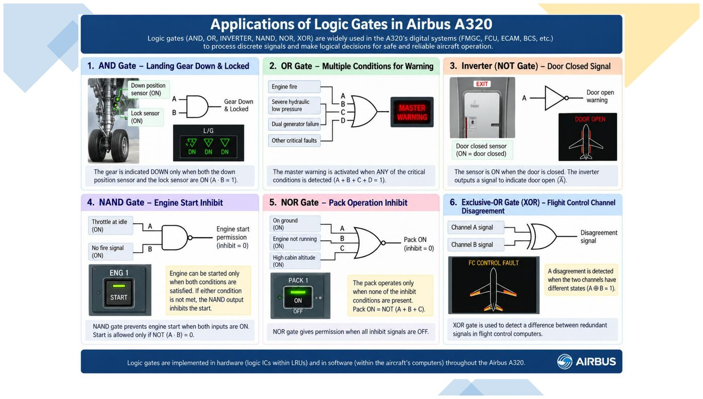
📖 Explanation for beginners
This summary table is the single most useful quick-reference tool in Part 1: instead of memorising a 4-row truth table for each of the 6 gates, you only need one short sentence describing when each gate outputs 1.
A quick way to classify them: AND and NAND are about "all" inputs, OR and NOR are about "at least one" input, and XOR and XNOR are about whether the COUNT of 1-inputs is odd or even. These form three pairs, each pair being one original gate and its inverse (NAND is AND inverted, NOR is OR inverted, XNOR is XOR inverted).
⚠️ Trap: confusing AND with OR when reading word problems
Everyday English can be loose about 'and'/'or'. E.g. 'the lamp lights when switch A AND switch B are both closed' is an AND (needs BOTH). But 'the lamp lights when switch A OR switch B is closed' is an OR. Always check for 'both/all' (AND) versus 'either/at least one' (OR) before drawing the circuit.
📖 Explanation for beginners
Natural language (in both Vietnamese and English) often uses "and"/"or" loosely, not as strictly as Boolean logic does, which makes this a very common source of error when turning a real-world problem into a logic expression.
The most reliable keywords to look for: if the problem says "both", "all", "every", that signals AND; if it says "either", "at least one", "any", that signals OR. Always underline these exact keywords in the problem statement before drawing a circuit, rather than relying on a quick skim.
Quick self-check
Not graded: answer before moving on:
- Which gate outputs 1 only when BOTH inputs are 0?
- If A=1, B=1, C=0, what is A·B + C·A?
Hint: NOR; A·B+C·A = 1·1+0·1 = 1+0 = 1.
📖 Explanation for beginners
This practice exercise applies both skills just learned: recognising a gate from its truth-table description (question 1) and evaluating a multi-operator expression in the correct order (question 2).
For question 2: A·B+C·A with A=1, B=1, C=0 requires computing each AND first: A·B=1·1=1, C·A=0·1=0, then adding the two results: 1+0=1. If you got anything other than 1, you likely added before multiplying; review the operator-priority slide above.
Boolean algebra
- Basic laws (commutative, associative, distributive, absorption)
- De Morgan's theorem
- Step-by-step logic expression simplification
The 12 basic laws of Boolean algebra
| # | Law |
|---|---|
| 1 | A + 0 = A |
| 2 | A + 1 = 1 |
| 3 | A · 0 = 0 |
| 4 | A · 1 = A |
| 5 | A + A = A |
| 6 | A + A′ = 1 |
| 7 | A · A = A |
| 8 | A · A′ = 0 |
| 9 | A″ = A |
| 10 | A + AB = A |
| 11 | A + A′B = A + B |
| 12 | (A+B)(A+C) = A+BC |
📖 Explanation for beginners
These 12 laws are not 12 disconnected formulas to memorise by rote: each one is simply an obvious fact once you substitute 0 or 1 for A and work it out by hand. Take A+1=1: an OR gate with one input permanently tied to 1 will ALWAYS output 1 no matter what the other input is, exactly like "a room with one door that's always open always has an exit".
Use the following slides to understand the MEANING behind each group of laws (commutative, associative, distributive, De Morgan) rather than trying to cram the whole table from this slide alone.
Commutative and associative laws
Exactly like ordinary arithmetic: the order of addition/multiplication doesn't matter, and grouping within a chain of all-AND (or all-OR) terms doesn't matter either.
📖 Explanation for beginners
These two laws simply state that for a pure AND or pure OR gate (not mixing AND and OR), the order the variables are written in, or how parentheses are grouped, does not change the result, exactly as in arithmetic (2+3=3+2, and (2+3)+4=2+(3+4)).
One caveat: these two laws ONLY apply when every term uses the SAME operation (all AND, or all OR). Once AND and OR are mixed in one expression, the distributive law on the next slide is needed; commutative/associative cannot be applied naively there.
The distributive law
This is the key step for converting an expression from product-of-sums (POS) to sum-of-products (SOP) form: the standard form used when designing AND-OR circuits.
📖 Explanation for beginners
The distributive law is the most important bridge connecting mixed AND/OR expressions, playing exactly the role multiplication plays over addition in arithmetic (2×(3+4)=2×3+2×4).
Its practical meaning: this law lets you "expand" a product-of-sums expression (POS, e.g. A·(B+C)) into a sum-of-products form (SOP, e.g. A·B+A·C). SOP is the standard form most commonly used when designing a two-level AND-OR circuit, covered in detail in Part 3.
Worked simplification: A + AB
Simplify Y = A + AB using rule 10 (A + AB = A):
- Apply rule 10 directly → Y = A
Check with a truth table: when A=0, AB=0 so Y=0=A; when A=1, Y=1+B=1=A. Matches in every case: confirms rule 10 is correct.
📖 Explanation for beginners
Rule 10 (A+AB=A) can seem hard to believe at first: why does adding an entire extra term AB leave the final result unchanged? The answer comes from checking each case: when A=0, the term AB is always 0 (anything times 0 is 0), so Y=0+0=0=A; when A=1, the second term no longer matters because Y=1+B is always 1 (OR with 1 always gives 1), and A also equals 1, so Y=1=A.
The bigger lesson here matters more than the result itself: always verify a simplification rule by testing EACH value of the variable, rather than just trusting the formula blindly.
Worked simplification: AB + AB′
Simplify Y = AB + AB′:
- Step 1: factor out A → Y = A(B + B′)
- Step 2: apply rule 6 (B+B′=1) → Y = A·1
- Step 3: apply rule 4 (A·1=A) → Y = A
📖 Explanation for beginners
This is a complete 3-step simplification, each step applying exactly ONE law already learned, with no shortcuts skipped. Step 1 factors out the common term (exactly like factoring in ordinary algebra: AB+AB′=A(B+B′)). Step 2 applies law 6 (B+B′=1: a variable ORed with its own inverse ALWAYS gives 1, since either B=1 or B′=1, never both 0 at once). Step 3 applies law 4 (A·1=A, multiplying by 1 leaves the value unchanged).
Laying out each step this clearly is exactly the skill to practise: for longer simplifications, always note WHICH numbered law is used at each step, so mistakes are easy to trace back.
Multi-step simplification: AB + A′C + BC
Simplify Y = AB + A′C + BC (the consensus theorem):
- The term BC is redundant once AB and A′C are present
- Simplified result: Y = AB + A′C
A classic example showing simplification sometimes requires spotting one entirely redundant term (the 'consensus' term), not just applying basic laws step by step.
📖 Explanation for beginners
This is the hardest example in Part 2, because simplifying away the BC term does not come from mechanically applying any single one of the 12 basic laws, it requires RECOGNISING that BC is a "redundant term" once AB and A′C are already present.
The intuition: if AB=1 then B must be 1; if A′C=1 then A′ must be 1 (meaning A=0). Consider every case where B and C are both 1: either A=1 (in which case AB=1, so BC being present or not makes no difference since Y is already 1), or A=0 (in which case A′C=1, which alone already makes Y=1). So BC can never be the term that "saves" a case that AB and A′C haven't already saved, so dropping it changes nothing.
De Morgan's theorem
- Meaningthe complement of a product equals the sum of complements; the complement of a sum equals the product of complements
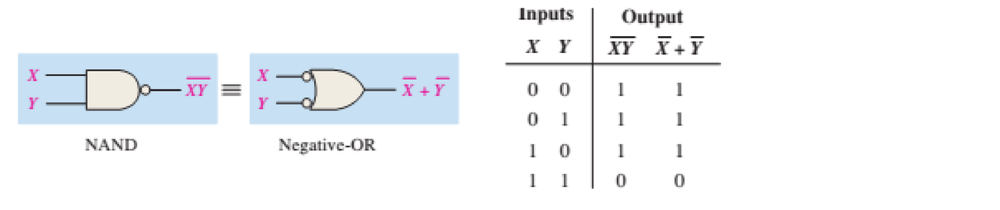
📖 Explanation for beginners
De Morgan's theorem is arguably the single most important theorem in all of Boolean algebra, because it shows how to "break open" a NOT that spans an entire AND or OR cluster, an operation that comes up constantly when simplifying circuits.
A visual way to remember it without memorising the formula: when inverting an expression inside parentheses, do two things AT ONCE: swap the operation inside (AND becomes OR, or OR becomes AND), and invert EACH variable individually inside the parentheses. Remembering "swap the operation + invert each variable" is enough to apply De Morgan correctly without needing the symbolic formula.
Applying De Morgan: simplifying (A′B′)′
Simplify Y = (A′B′)′:
- Apply De Morgan: (A′B′)′ = (A′)′ + (B′)′ = A + B
Result: Y = A + B: a NAND gate with both inputs inverted is equivalent to a plain OR gate, illustrating why NAND is called a universal gate.
📖 Explanation for beginners
This is one of the most surprising results De Morgan's theorem produces: a NAND gate (two inputs already inverted before being combined) turns out to be EXACTLY equivalent to an ordinary OR gate. This is exactly why the NAND gate is called a "universal gate": using only NAND gates, one can rebuild AND, OR, and NOT.
In semiconductor manufacturing this is not just a formula trick: a chip maker can mass-produce JUST one type of NAND gate, then wire them together in different combinations to create every other type of gate, greatly simplifying and cutting the cost of production.
Truth table and 2-variable Karnaugh map
For Y = A′B + AB′ + AB (1 in three of the four possible combinations):
| A\B | 0 | 1 |
|---|---|---|
| 0 | 0 | 1 |
| 1 | 1 | 1 |
Grouping the two adjacent cells in the bottom row gives A, and the right column gives B → simplifies to Y = A + B.
📖 Explanation for beginners
The 2-variable Karnaugh map (K-map) is a tool that turns a truth table into a visual grid, letting the eye SEE adjacent groups of 1s directly instead of working through algebra step by step.
In the given table, the bottom row (A=1) is all 1s: grouping these two cells gives exactly the variable A (independent of B). The right column (B=1) is also all 1s: grouping this gives exactly the variable B. Seeing these two overlapping groups directly on the grid is much faster than working through Boolean algebra step by step, especially once the number of variables grows to 3 or 4.
⚠️ Trap: misapplying De Morgan with 3+ variables
A common mistake is inverting only the outermost operator while forgetting to invert EACH inner variable. (ABC)′ is NOT A′B′C: the correct answer is (ABC)′ = A′+B′+C′ (apply De Morgan repeatedly, pair by pair).
📖 Explanation for beginners
This is an extremely common mistake when applying De Morgan to 3 or more variables: many people only flip the outermost operation and forget to invert EACH variable inside. (ABC)′ is absolutely NOT equal to A′B′C (only inverting the first variable); all three variables must be inverted AND the operation changed: (ABC)′=A′+B′+C′.
A way to check without memorising the formula: apply De Morgan repeatedly, one pair at a time, like peeling layers off an onion. (ABC)′=((AB)C)′, apply De Morgan to the outer parentheses first: =(AB)′+C′, then apply it again to (AB)′: =(A′+B′)+C′=A′+B′+C′. Working in small steps like this never misses a variable.
Combinational logic circuits
- From truth table to circuit diagram
- Example: APU starter control circuit
What is combinational logic?
A combinational circuit is one whose output at any instant depends ONLY on the current input values, not on any past history/state: unlike sequential circuits which retain state (covered in the bistable section).
📖 Explanation for beginners
The definition of "combinational circuit" sounds abstract, but there is a very concrete test: if you set the same input values on a combinational circuit, the output will ALWAYS be identical every single time, no matter what the circuit "went through" before. A simple AND gate is the clearest example: A=1, B=1 always gives 1, regardless of what the inputs were a second earlier.
By contrast, sequential circuits (met in Part 4 with flip-flops) have "memory": the same input values can produce two different outputs depending on the circuit's previous state. Telling these two apart is the foundation for understanding everything else in this module.
From a real problem to a truth table
Problem: the Landing Gear Door Warning lamp should light when AT LEAST ONE of the two doors (left/right) is unlocked AND the aircraft is in flight (not on the ground).
Let L = left door unlocked, R = right door unlocked, F = in-flight. We need: Warning = (L+R)·F.
📖 Explanation for beginners
This is the most important step in the entire digital design process: translating a plain-language description into clearly named logic variables and a precise Boolean expression. This step is often rushed through, yet it is exactly where a problem is most easily misread.
For the landing gear door problem: the phrase "at least one door not locked" translates to an OR (L+R), while "AND currently flying" translates to an AND with variable F. Combined in the right order: Warning=(L+R)·F, not L+R·F (missing parentheses would completely change the meaning, since by the usual AND-before-OR priority, R·F would be computed first, breaking the intended logic).
Truth table for the landing gear door warning
| L | R | F | Warning=(L+R)·F |
|---|---|---|---|
| 0 | 0 | 1 | 0 |
| 1 | 0 | 1 | 1 |
| 0 | 1 | 1 | 1 |
| 1 | 1 | 0 | 0 |
The last row shows: even with both doors unlocked (L=R=1), if the aircraft is on the ground (F=0) there is NO warning: correctly ANDed with F.
📖 Explanation for beginners
This truth table only lists the combinations with real practical significance (here F is treated as the decisive variable, so both its values are shown, though a full 3-variable table would have 8 rows; this shortened table picks 4 key illustrative rows).
The most notable row is the last one: L=1, R=1 (both doors unlocked, the most dangerous case looking only at the doors), yet F=0 (aircraft on the ground) still gives Warning=0, NO warning. This is exactly the point of ANDing with F: no matter how bad the door condition, an aircraft on the ground does not need to alert the pilot mid takeoff or landing.
From truth table to gate diagram
The circuit for Warning = (L+R)·F needs:
- One 2-input OR gate (L, R) → produces 'at least one door open'
- One 2-input AND gate (the OR's output, and F) → produces the final warning signal
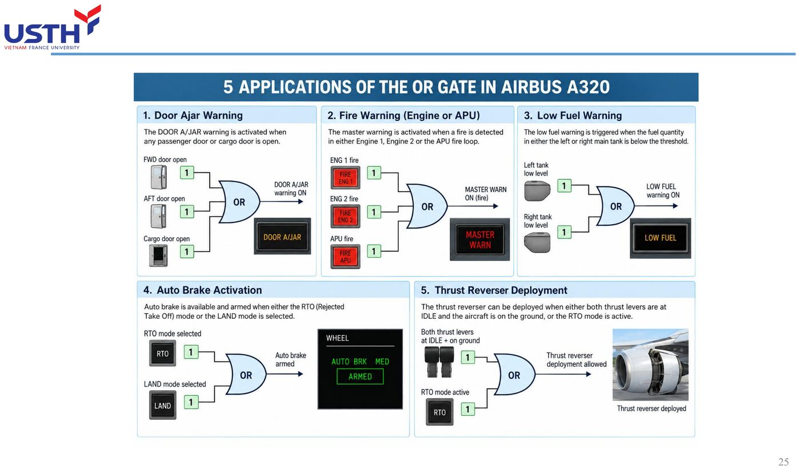
📖 Explanation for beginners
Drawing a gate diagram from a Boolean expression is almost a direct "reverse translation": each operation in the expression corresponds to exactly one physical gate. Warning=(L+R)·F has two operations (one OR, one AND), so the diagram needs exactly two gates.
The drawing order always goes from the INSIDE of the parentheses outward: the OR gate (taking L, R) must be drawn and evaluated first, its output then feeding into one of the two inputs of the AND gate (the other input being F). Drawing it in the wrong order (feeding L, R, F all into a single 3-input AND gate) would compute an entirely wrong meaning for the OR.
Example 2: APU starter control (simplified)
Per Tooley: the APU (auxiliary power unit) starter control circuit ANDs together several safety signals (e.g. no fire warning, engine speed within a safe range) before allowing the start relay to close: a real-world example of an AND with multiple inputs, not just the two-variable case above.
📖 Explanation for beginners
The APU (Auxiliary Power Unit, an engine that supplies power/air when the main engines are not running) start example shows that multi-input AND is far from rare in practice: aviation safety often requires MANY conditions to be simultaneously true before an important action is permitted.
The design principle here is "fail-safe": if just ONE safety condition is not met (for example a fire warning is present), the whole AND chain immediately outputs 0, blocking the starter relay from closing. This is why multi-input AND (not just 2-variable AND) appears so frequently in an aircraft's safety-protection systems.
Designing a 3-variable circuit from a truth table (SOP)
Given a truth table where Y=1 for (A,B,C) = (0,1,1) or (1,0,1), write the sum-of-products (SOP) form by ORing the minterm for each row where Y=1:
Simplify further by factoring out C: Y = C(A′B + AB′) = C(A⊕B).
📖 Explanation for beginners
SOP (Sum of Products) is a MECHANICAL procedure for writing a Boolean expression directly from a truth table, with no guesswork: for every row where Y=1, write exactly one "minterm" (an AND cluster of every variable, written plain if it is 1 in that row, inverted if it is 0), then OR all these minterms together.
For (A,B,C)=(0,1,1) giving Y=1: A=0 so write A′, B=1 so write B, C=1 so write C, ANDed together gives A′BC. Doing the same for row (1,0,1) gives AB′C. ORing the two minterms: Y=A′BC+AB′C. Only afterward is algebraic simplification applied (here factoring out C and recognising A′B+AB′=A⊕B).
The two-level AND-OR circuit
Any general SOP combinational circuit can always be drawn as two levels: LEVEL 1 is a set of AND gates (one per product term), LEVEL 2 is a SINGLE OR gate combining all level-1 outputs: the standard structure used when programming PLDs/PALs.
📖 Explanation for beginners
The "two-level AND-OR" architecture rests on a very powerful mathematical fact: ANY Boolean function, however complex, can always be written in SOP form, and therefore can always be drawn with exactly 2 layers of gates (an AND layer, then an OR layer), with no need for deeper nested layers.
This is precisely why PLD/PAL chips (Programmable Logic Devices) are built with a fixed "one AND array feeding one OR array" structure: the programmer only needs to configure the right connections, without worrying whether "enough gate layers" exist for any given logic function.
SOP versus POS
| SOP (sum-of-products) | POS (product-of-sums) | |
|---|---|---|
| Form | Y = AB + A′C | Y = (A+C)(A′+B) |
| Derived from | rows where Y=1 (minterms) | rows where Y=0 (maxterms), then inverted |
| Circuit structure | AND then OR | OR then AND |
📖 Explanation for beginners
SOP and POS are two EQUIVALENT ways of writing the same Boolean function, differing only in their starting point: SOP starts from the rows WHERE Y=1 (minterms), while POS starts from the rows WHERE Y=0 (maxterms), then applies De Morgan to flip it back.
In practice, choosing SOP or POS usually depends on which form gives a SHORTER expression after simplification: if a truth table has FEWER rows with Y=1 than with Y=0, SOP is usually shorter (fewer minterms to OR together); otherwise POS may be shorter.
⚠️ Trap: forgetting to re-check the full truth table after simplifying
After algebraically simplifying an expression, ALWAYS rebuild the truth table of the simplified expression and compare it against the original for EVERY combination: checking only 1-2 rows can hide an error in a less common branch.
📖 Explanation for beginners
This is an extremely important quality-check habit that is very often skipped when doing exercises: after simplifying an expression through several algebraic steps, it is VERY EASY to slip up at some intermediate step without noticing right away.
The surest way to check: rebuild the ENTIRE truth table of the simplified expression (every possible variable combination, not just 1 or 2 random rows), and compare it against the ORIGINAL truth table. If they match at EVERY row, the simplification is certainly correct; checking only 1 or 2 rows "for form's sake" can easily miss a simplification error hiding in a rarely-hit branch.
Quick self-check
Not graded: write the SOP expression for a circuit where Y=1 when (A,B)=(0,1) or (1,1). Hint: Y = A′B + AB, which simplifies via the absorption law to Y = B.
📖 Explanation for beginners
This practice exercise applies the exact SOP procedure just learned: with Y=1 when (A,B)=(0,1) or (1,1), write the two corresponding minterms (A′B for the first row, AB for the second) and OR them: Y=A′B+AB.
The next simplification step applies rule 11 (A+A′B=A+B, with roles slightly rearranged: here it's B+A′B=B+A written differently, or more directly, factor out B: Y=B(A′+A)=B·1=B using laws 6 and 4). The result B is MUCH simpler than the raw SOP expression, showing clearly the value of the algebraic simplification step after writing a raw SOP.
Tri-state logic, monostables & bistables
- Tri-state logic for bus sharing
- Monostable (one-shot) and bistable (flip-flop) devices
What is tri-state logic?
Tri-state logic adds a third state beyond 0 and 1: high impedance (High-Z), where the output 'disconnects' from the circuit as if not connected at all. This lets MULTIPLE devices share a SINGLE bus line without signal conflicts.
📖 Explanation for beginners
Tri-state logic sounds like it contradicts the "only 2 voltage levels" principle learned in Module 01, but it does not: High-Z is not a third VOLTAGE LEVEL, it is a state where the output completely "lets go", neither pushing current out nor pulling current in, exactly like a light switch left halfway, connected to nothing.
The core benefit: without High-Z, every device wired onto a shared bus would always "try" to force its own voltage onto the line, causing conflicts when multiple devices share it. High-Z lets a device go completely "silent", yielding the bus to another device.
The Enable pin on a tri-state buffer
| Enable | Input | Output |
|---|---|---|
| 0 | X (any) | High-Z (disconnected) |
| 1 | 0 | 0 |
| 1 | 1 | 1 |
Only when Enable=1 does the buffer pass the input through; Enable=0 always gives High-Z regardless of the input.
📖 Explanation for beginners
The Enable pin acts like a "master switch" deciding whether the buffer is allowed to speak at all, entirely separate from whatever the Input value happens to be. The truth table shows this clearly: whether Input is 0 or 1, as long as Enable=0, the Output is ALWAYS High-Z, the Input is "locked out" and never passed through.
Only when Enable=1 does the buffer "open the gate" and let Input pass straight through to Output unchanged. This is the mechanism that lets multiple devices share one bus: at any moment exactly one device has Enable=1, while every other device keeps Enable=0 to stay silent at High-Z.
Why buses need tri-state
If two devices are wired directly (without tri-state) to one line and one drives logic 1 while the other drives logic 0 at the same time, an electrical conflict (bus contention) results: potentially damaging components. Tri-state solves this by allowing only ONE device to 'talk' on the bus at a time, with all others in High-Z.
📖 Explanation for beginners
Imagine two people shouting two different words into the same microphone at the exact same time: the recorded sound turns into an unintelligible mess. On an electrical bus, if two devices simultaneously try to force logic 1 and logic 0 onto the same wire, an abnormally large current can flow (bus contention), generating heat and risking permanent damage to components.
The tri-state solution works like a "politeness rule": at any given moment, ONLY one device is allowed to "speak" (Enable=1, driving a clear 0 or 1), and every other device must stay completely "silent" (High-Z), never simultaneously forcing its own signal onto the bus.
What is a monostable (one-shot)?
A monostable circuit has only ONE stable state. On receiving a trigger pulse, it switches to a second state for a fixed duration (set by an RC time constant), then AUTOMATICALLY returns to its original stable state.
📖 Explanation for beginners
The term "one-shot" describes a monostable circuit's behaviour very precisely: it reacts EXACTLY ONCE per trigger pulse, producing an output pulse of a FIXED width (independent of how long the trigger pulse itself lasted), then automatically returns to its resting state with no outside intervention needed.
The key point to remember: the width of the output pulse is set by the external R and C components (the RC time constant), NOT by whether the trigger pulse was long or short. This is exactly why monostables are used to "standardise" a signal's width.
Applications of monostables
Monostables are commonly used to generate a pulse of FIXED width from a trigger pulse of arbitrary width (e.g. cleaning up/shaping a noisy signal from a mechanical switch: debouncing), or to create a short time delay between two events in a control sequence.
📖 Explanation for beginners
The "debounce" application is the classic textbook use of a monostable: when a mechanical switch is flipped, the metal contacts inside actually bounce back and forth rapidly for a few milliseconds before settling, producing a burst of noisy pulses instead of one clean transition edge.
A monostable circuit "filters" this noise by reacting only to the FIRST trigger pulse, then producing one clean output pulse wide enough to "cover" the remaining bounce time, so the digital circuit downstream sees exactly ONE transition event instead of dozens of false pulses.
What is a bistable (flip-flop)?
A bistable circuit has TWO stable states and can hold either one indefinitely until a control signal forces a change: this is the flip-flop, the basic 1-bit memory element underlying every sequential circuit (registers, counters, memory).
📖 Explanation for beginners
The term "bistable" tells you exactly what it is: a circuit with TWO equally stable states, and once it settles into one of them, it STAYS THERE FOREVER (it does not automatically return anywhere, unlike a monostable) until an external control signal actively tells it to switch to the other state.
This is the most basic "memory" mechanism in digital electronics: one bit of data (0 or 1) is stored by having a bistable circuit hold one of its two stable states, until a new write command overwrites it. Every register, counter, and static RAM (SRAM) cell is built on this exact principle.
A simple R-S (Reset-Set) flip-flop
| S | R | Next Q |
|---|---|---|
| 0 | 0 | unchanged |
| 1 | 0 | 1 (set) |
| 0 | 1 | 0 (reset) |
| 1 | 1 | invalid |
Can be built from two cross-coupled NOR gates or two cross-coupled NAND gates: exactly the dual R-S bistable example built with a 4001 (CMOS NOR) IC mentioned in Tooley's textbook.
📖 Explanation for beginners
The R-S flip-flop truth table reads exactly as its name suggests: S (Set) forces the output Q to 1, R (Reset) forces Q to 0. The most interesting row is the first one (S=0, R=0): the output Q "holds" its previous value, which is exactly what "memory" looks like, the output is not fully determined by the CURRENT inputs alone, but also by history.
The last row (S=1, R=1) is marked "invalid" because this asks the circuit to set and reset AT THE SAME TIME, a contradictory command that a cross-coupled NOR/NAND circuit cannot resolve consistently: the actual result depends on the fine timing details of each gate and cannot be reliably predicted, so this input combination must always be AVOIDED in a design.
Monostable vs bistable comparison
| Monostable | Bistable | |
|---|---|---|
| Stable states | 1 | 2 |
| After triggering | returns automatically | holds until forced to change |
| Main function | pulse/time-delay generation | storing 1 bit of data |
📖 Explanation for beginners
This comparison table condenses the core difference between the two bistable and monostable circuit types into one single sentence: a monostable AUTOMATICALLY returns after a fixed time (used to CREATE a pulse or a delay), while a bistable STAYS PUT forever until actively changed (used to STORE data).
Remembering this one distinguishing sentence will keep you from ever confusing the two in a real problem: if a problem asks to "create a pulse of fixed length" or "delay a signal by some time", that is a monostable problem; if it asks to "remember a state" or "remember whether a button was pressed", that is a bistable problem.
⚠️ Trap: confusing High-Z with logic 0
High-Z is NOT a low voltage level (logic 0): it is a fully 'floating' output state with no current being driven. Measuring it with a voltmeter can give unstable/noisy readings because the output isn't being driven by any source.
📖 Explanation for beginners
This is one of the most common real-world measurement traps when working with tri-state circuits: beginners often assume High-Z simply means "logic 0" or "low voltage", but High-Z is actually a state where the output is NOT DRIVEN by any source at all, with no current flowing out of that output.
The practical consequence: measuring the voltage at a pin currently in High-Z with a multimeter can give erratic, wildly fluctuating readings, picked up from nearby signals (since the meter's own input has finite impedance), quite unlike measuring a pin genuinely at logic 0 (which stays stable near 0V). Do not rush to conclude "the circuit is broken" just because a High-Z pin reads unstable.
Quick self-check
Not graded: on a bus shared by 4 devices, how many devices should be in a state OTHER than High-Z at any one time? Hint: exactly 1 (the bus-sharing principle).
📖 Explanation for beginners
The core principle of sharing a bus with tri-state fits in one sentence: at any given moment, no matter how many devices are wired onto the bus, ONLY ONE device is ever permitted to have Enable=1 (actually driving a 0 or 1 onto the bus), and every other device must sit at High-Z.
With 4 devices sharing one bus, the answer is always 1, regardless of how many devices are on the bus: this is exactly the bus-contention protection principle learned at the start of this part, applying to ANY number of devices sharing a bus, not just the case of 4.
Logic families
- TTL and its variants (LS, S…)
- CMOS: low power, high noise margin
- Choosing the right logic family for an application
Why are there several different logic families?
Each logic family has different electrical characteristics: supply voltage, switching speed, power consumption, noise immunity: so choosing the right family for the right application (high speed, low power, high-noise environment...) is an important design decision.
📖 Explanation for beginners
A "logic family" is a group of chips built using the same underlying semiconductor technology (for example, all built from bipolar transistors, or all from MOSFETs), which makes them share the same electrical characteristics: the supply voltage they need, how fast they switch between 0 and 1, how much power they consume, and how well they resist noise.
No single logic family is "best" in every situation: a fast family usually consumes more power, and a power-saving family usually runs slower. Choosing the right family for the right application (say, a battery-powered circuit versus one that must process signals extremely fast) is a genuine engineering decision, not a minor footnote.
The TTL family (Transistor-Transistor Logic)
TTL uses bipolar (BJT) transistors, offering fast switching but higher static current draw than CMOS: suitable for high-speed applications where power is less of a concern.
📖 Explanation for beginners
TTL (Transistor-Transistor Logic) is an early logic technology built from bipolar transistors (BJTs, the classic transistor type controlled by current, unlike the voltage-controlled MOSFETs found in CMOS).
The key fact to remember: TTL needs a fairly precise supply voltage, only 5V, allowed to vary very little (±5%, i.e. between 4.75V and 5.25V), far less flexible than CMOS. In exchange, bipolar transistors switch quickly, which is why TTL was once a popular choice for high-speed applications during its heyday.
TTL variants
| Variant | Characteristic |
|---|---|
| Standard TTL | baseline, fan-out 10, noise margin ~400mV |
| LS-TTL (Low-power Schottky) | lower power, still fairly fast |
| S-TTL (Schottky) | faster than standard, higher power |
📖 Explanation for beginners
The three TTL variants in the table illustrate a very typical engineering trade-off: speed and power consumption usually move TOGETHER, wanting more speed usually costs more power.
LS-TTL (Low-power Schottky) is an improved version using Schottky diodes to significantly cut power consumption compared with standard TTL, while still keeping reasonably good speed: this is why LS-TTL became the most widely used TTL variant in practice, striking a good balance between speed and power compared with the other two options.
The CMOS family (Complementary MOS)
CMOS uses complementary MOSFET pairs (one N-channel + one P-channel), drawing virtually NO static current in a steady state (power is drawn mainly while switching) : the reason CMOS dominates modern battery-powered/portable devices.
📖 Explanation for beginners
CMOS (Complementary MOS) is arguably the single most important technological leap in the history of digital chips, using a COMPLEMENTARY PAIR of MOSFETs (one N-channel, one P-channel) inside every gate.
The key fact that gives CMOS its edge: at any stable moment (not actively switching), exactly one of these two transistors is ALWAYS fully OFF, meaning almost no current flows continuously. CMOS only draws meaningful power during the brief moment of SWITCHING from 0 to 1 or back: this is exactly why CMOS completely dominates modern battery-powered devices, from phones to smartwatches.
CMOS advantage: high noise margin
Because CMOS outputs swing almost the entire supply range for its two logic levels (rail-to-rail), its noise margin is typically MUCH LARGER than TTL's: better immunity in harsh electromagnetic environments such as an engine bay/avionics compartment.
📖 Explanation for beginners
"Noise margin" is the safety gap between a signal's actual voltage and the threshold at which the circuit would misread the logic level: the larger the margin, the more electrical noise a signal can tolerate without being misread.
CMOS typically uses almost the entire supply voltage range for its two logic levels (called "rail-to-rail": the low level sits near 0V and the high level sits near the supply voltage), while TTL uses a narrower slice of that range. As a result, CMOS usually has a significantly larger noise margin than TTL, explaining why CMOS is preferred in harsh electromagnetic environments such as an engine bay or an avionics bay, where interference from other systems is always present.
TTL vs CMOS comparison table
| TTL | CMOS | |
|---|---|---|
| Transistor technology | bipolar (BJT) | complementary MOSFET |
| Supply | 5V ±5% | 3V-15V (depending on series) |
| Static power | higher | very low |
| Noise margin | ~400mV | larger (rail-to-rail) |
| Best suited for | high speed, power less critical | portable/battery-powered devices |
📖 Explanation for beginners
This comparison table gathers everything learned separately across the previous 4 slides into a single overview, useful for a quick lookup when deciding which logic family suits a given application.
Remember two "decision keywords" when reading this table: if SPEED is the top priority and power consumption matters less, lean toward TTL; if the top priority is SAVING POWER (battery operation) or good NOISE IMMUNITY, lean firmly toward CMOS.
Example: choosing a logic family for portable test equipment
Problem (Tooley Ch.5 Q6): which logic family suits a battery-powered, portable piece of test equipment? Since the key requirement is low power consumption to extend battery life, CMOS is the most appropriate choice among CMOS/TTL/LS-TTL.
📖 Explanation for beginners
Choosing a logic family for portable test equipment is a direct application of the comparison table just learned to a real situation: the key word in the problem is "battery-powered", which immediately signals that the top priority must be SAVING POWER to extend time between charges.
Among the three choices CMOS/TTL/LS-TTL, CMOS has the lowest static power consumption (drawing almost nothing when not switching), making it the most sensible choice. This is exactly the reasoning skill to practise: read the problem, identify the SINGLE MOST IMPORTANT criterion being emphasised, then look up the matching row in the comparison table rather than trying to recall every technical detail.
Fan-out and fan-in revisited by family
Standard TTL fan-out is 10 (drives up to 10 same-family TTL inputs). CMOS typically has a much higher DC fan-out (due to its extremely high input impedance), but is limited in practice by speed (each added load slows switching time due to parasitic capacitance).
📖 Explanation for beginners
Fan-out (the maximum number of loads a gate can drive) and fan-in (the number of inputs a gate can accept) were introduced back in basic logic gate theory, and are now revisited from the angle of differences between logic families.
An interesting point: TTL has a fairly low fixed fan-out (10) because it is limited by the CURRENT each load requires. CMOS in theory has a much larger DC fan-out (since CMOS inputs have extremely high impedance and draw almost no current), but in practice is still limited by SPEED: each added load contributes a little parasitic capacitance, gradually slowing switching time, so the practical load limit still exists even though it is not caused by current.
⚠️ Trap: mixing TTL and CMOS incorrectly
TTL's 'logic 1' voltage level (~2.4V or above) may NOT be high enough for standard-power CMOS (threshold ~70% of Vdd, e.g. 3.5V at Vdd=5V) to reliably recognise as high: use a TTL-compatible CMOS variant (74HCT instead of 74HC) when interfacing the two families.
📖 Explanation for beginners
This is a very real trap when two systems using different logic families need to "talk" to each other: the voltage TTL considers "logic 1" (often as low as about 2.4V) might NOT be HIGH ENOUGH for a standard-power CMOS chip (which uses a higher logic-1 threshold, around 70% of supply voltage, e.g. 3.5V on a 5V supply) to correctly recognise it as high.
The consequence of getting this wrong: a CMOS chip might misread a TTL "1" as a "0", causing a hard-to-find logic error. The standard industry fix: use a CMOS variant marked with a "T" (for example 74HCT instead of 74HC), specifically designed with a threshold backward-compatible with TTL voltage levels.
Quick self-check
Not graded: a cockpit system needs logic circuits that resist strong electromagnetic interference and draw low power: which family should be preferred? Hint: CMOS (high noise margin plus low static power).
📖 Explanation for beginners
This practice exercise ties together the two most important criteria learned across all of Part 5: NOISE IMMUNITY (noise margin) and POWER CONSUMPTION (static power), both of which are CMOS's standout strengths over TTL.
A cockpit system needing both properties at once (withstanding strong electromagnetic interference from nearby equipment, AND consuming little power to reduce the load on the aircraft's electrical system): CMOS is the right choice on both criteria, with no trade-off needed as there would be against TTL.
De Morgan's theorem
- A, Blogic input variables (0 or 1)
- ′NOT / inversion
- · +AND, OR operators
📜 Theoretical & historical background
Boolean algebra was published by George Boole in 1854 in An Investigation of the Laws of Thought, originally a pure formalisation of propositional logic with no link to electronics. It only became a precise tool for analysing and designing relay switching circuits after Claude Shannon's 1937 MIT master's thesis: laying the direct foundation for all modern digital circuit design, including aircraft logic systems.
🔎 Real case study: landing gear door warning circuit
A simple aircraft warning circuit must light a warning lamp when AT LEAST ONE landing gear door is not fully locked AND the aircraft is in flight mode (not on ground). This is a classic example from Tooley's textbook: warning output = OR of the gear-door switches, ANDed with the 'in-flight' signal: a direct illustration of combining AND/OR to encode a real safety condition.
⚠️ Common trap
Confusing NAND/NOR with 'the everyday negation of AND/OR' by guessing the truth table intuitively instead of computing it step by step: the safest approach is always to write out the full AND/OR truth table first, then invert the result bit by bit, never skip straight to the answer.
Quick self-check (10 questions, originals first)
Deep practice
Open this module's question bank (112 + 44)
Jupyter notebook
Download the notebook (already executed, real outputs):
- 02_logic-boolean.ipynb (VI+EN)
Source errors and doubts
No errors recorded for this module yet.